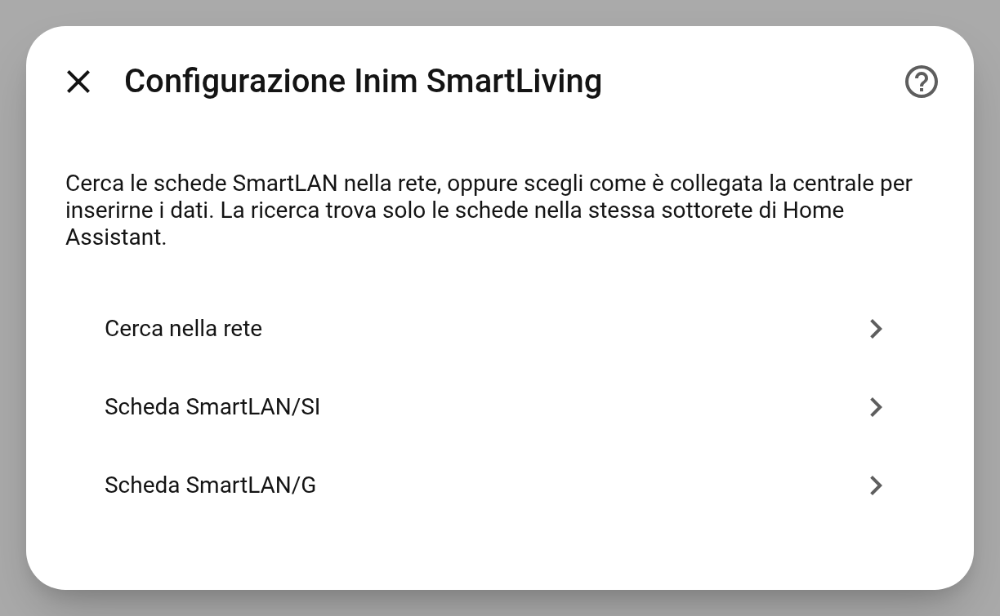
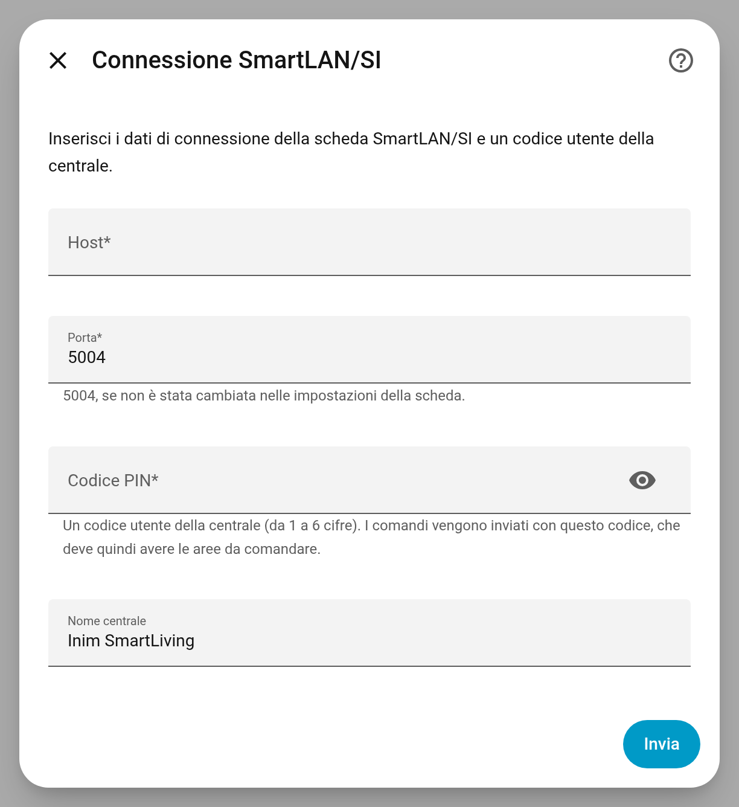
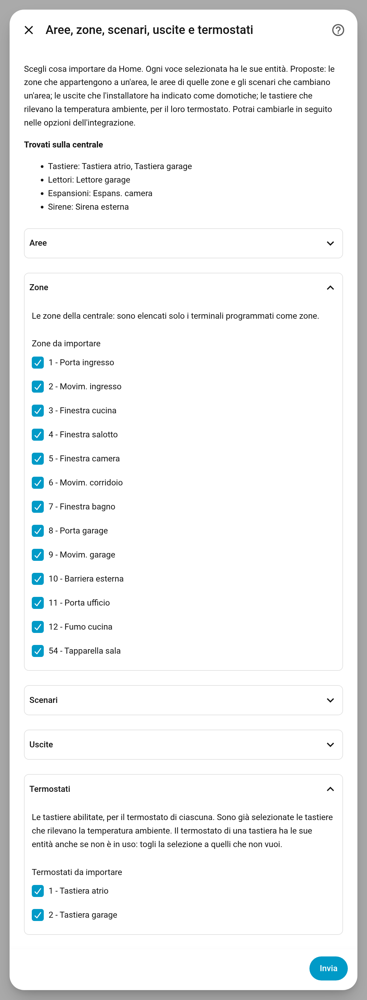
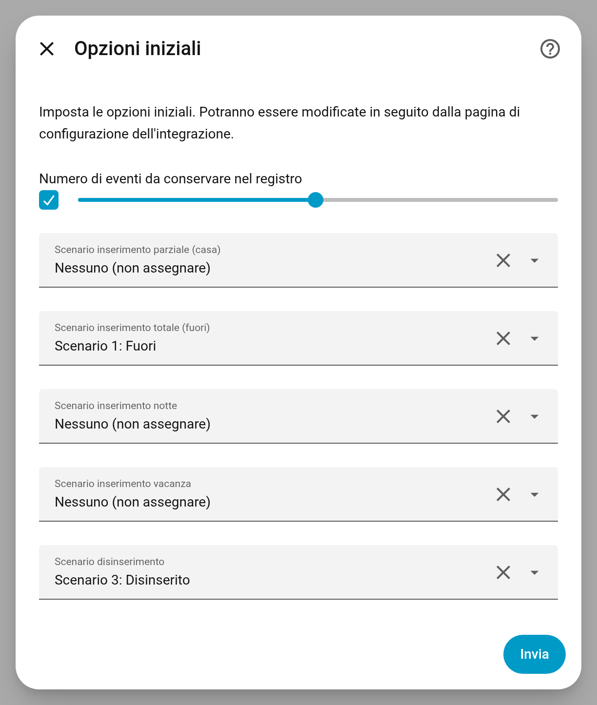

Configurazione¶
Questa pagina spiega come aggiungere la tua centrale a Home Assistant, come cambiarne in seguito i dati di connessione e come rileggerne la configurazione dopo una modifica sulla centrale.
Aggiungere una centrale¶
Dopo aver installato l'integrazione e riavviato Home Assistant:
- Vai in Impostazioni → Dispositivi e servizi.
- Fai clic su Aggiungi integrazione, cerca Inim SmartLiving Alarm e selezionala.
-
Scegli come trovare la centrale:

- Cerca nella rete elenca le schede SmartLAN che rispondono e non sono ancora configurate. Scegli la tua, e indirizzo e porta vengono compilati per te. La ricerca trova solo le schede nella stessa subnet di Home Assistant.
- Scheda SmartLAN/SI o Scheda SmartLAN/G: inserisci tu i dati. Usa queste voci quando la ricerca non trova la tua scheda.
-
Inserisci l'indirizzo della scheda, la porta e il tuo PIN, e dai un nome alla centrale. I campi sono descritti più avanti.

-
Fai clic su Invia. L'integrazione si collega alla centrale, la verifica e ne legge la configurazione. Se la configurazione viene rifiutata, il messaggio dice perché (vedi più avanti).
-
Scegli le aree, zone, scenari, uscite e termostati da importare. Ogni voce che selezioni ha le sue entità. Quello che la centrale mostra come in uso è già selezionato; cambialo se vuoi.

-
Imposta le Opzioni iniziali: quanti eventi conservare e quali scenari usa la scheda Pannello degli Allarmi. Vedi Opzioni.

-
Fai clic su Invia. La centrale compare come dispositivo con le sue entità: vedi Entità.
Campi della connessione¶
| Campo | Serve per | Cosa inserire |
|---|---|---|
| Host | entrambe le schede | L'indirizzo IP della scheda, per esempio 192.168.1.100. |
| Porta | entrambe le schede | La porta TCP della scheda: 5004, se non è stata cambiata nelle impostazioni della scheda. |
| Nome utente della scheda e Password della scheda | solo SmartLAN/G | Il nome utente e la password della pagina web della scheda. La scheda li usa per cifrare la connessione. |
| Codice PIN | entrambe le schede | Un PIN utente della centrale, da 1 a 6 cifre. I comandi vengono inviati con questo PIN, quindi deve avere le aree che vuoi comandare. |
| Nome centrale | facoltativo | Il nome della centrale in Home Assistant, per esempio Home. Gli ID delle entità iniziano con questo nome. |
Cosa elenca il passaggio delle voci¶
Aree, zone, scenari, uscite e dispositivi
- Aree: tutte le aree della centrale (5 su una SmartLiving 505 o 515, 10 su una 1050, 15 su una 10100).
- Zone: le zone della centrale. Sono elencati solo i terminali programmati come zone (non le uscite né i terminali inutilizzati), comprese le seconde zone dei terminali doppi (da 11 a 20 sulla 505, da 21 a 40 sulla 515, da 51 a 100 sulla 1050, da 101 a 200 sulla 10100).
- Scenari: tutti gli scenari della centrale (30).
- Uscite: le uscite che il tuo codice utente può comandare, con il loro tipo (on/off, monostabile con il suo tempo, o dimmer); la sezione compare solo se ce ne sono. Sono selezionate solo le uscite che l'installatore ha contrassegnato come domotiche (firmware 6): un'uscita può comandare una sirena, una serratura o un cancello, quindi seleziona solo quelle che intendi comandare da Home Assistant (vedi Uscite).
- Trovati sulla centrale: le tastiere, i lettori, le espansioni e le sirene abilitati sulla centrale, per nome, come riferimento.
La configurazione seleziona quello che la centrale mostra come in uso: le zone che appartengono a un'area, le aree di quelle zone, gli scenari che cambiano almeno un'area e le uscite che l'installatore ha contrassegnato come domotiche. Ogni sezione si può espandere o contrarre.
Perché la configurazione può essere rifiutata¶
| Messaggio | Cosa fare |
|---|---|
| Connessione fallita. Controlla l'Host e la Porta … | Controlla l'indirizzo e la porta, che Home Assistant possa raggiungere la scheda e che nessun altro programma sia collegato (vedi Risoluzione dei problemi). |
| Il PIN deve avere da 1 a 6 cifre. | Inserisci il PIN solo con cifre. |
| Il PIN non corrisponde a nessun codice utente della centrale. | Inserisci il PIN di un codice utente programmato sulla centrale. |
| La scheda SmartLAN/G non ha accettato la connessione. | Controlla il nome utente e la password della scheda. |
| La scheda SmartLAN/G ha risposto, ma la risposta non è nel formato previsto. | Se nome utente e password sono corretti, la tua scheda potrebbe rispondere in un modo che l'integrazione non gestisce ancora: vedi Risoluzione dei problemi. |
| La centrale è in programmazione … | Riprova al termine della programmazione. |
| Il firmware della centrale non è supportato: serve il firmware 5.1 o successivo. | Un firmware precedente al 5.1 non si può configurare. |
| Questo modello SmartLiving non è ancora supportato. | Segnala il modello e il firmware su GitHub. |
| Questa centrale di allarme è già configurata. | La centrale è già configurata in Home Assistant. |
Cambiare i dati di connessione (Riconfigura)¶
Se l'indirizzo, la porta o il PIN della tua centrale cambiano (oppure, per SmartLAN/G, il nome utente o la password della scheda), non serve rimuovere e aggiungere di nuovo l'integrazione:
- Vai in Impostazioni → Dispositivi e servizi e apri Inim SmartLiving Alarm.
- Apri il menu (⋮) della voce della tua centrale e scegli Riconfigura.
- Inserisci i nuovi dati e fai clic su Invia. Il PIN e la password della scheda non sono precompilati: lasciali vuoti per mantenere quelli attuali.
L'integrazione contatta la centrale con i nuovi dati, ne rilegge la configurazione e si ricarica. Le tue opzioni, entità e ID delle entità vengono mantenuti; solo una tastiera abilitata nel frattempo, che rileva la temperatura ambiente, ha il suo termostato già selezionato.
Cosa verifica Riconfigura
- Se la centrale non è raggiungibile, viene mostrato un errore e non cambia nulla.
- Un indirizzo già usato da un'altra centrale configurata viene rifiutato, e così un PIN che non corrisponde a nessun codice utente della centrale.
- Il tipo di scheda (SmartLAN/SI o SmartLAN/G) non si può cambiare qui: per farlo, rimuovi l'integrazione e aggiungila di nuovo.
Rileggere la configurazione della centrale¶
L'integrazione legge i nomi e la programmazione della centrale quando la aggiungi: i nomi di aree, zone, scenari, codici utente, chiavi, tastiere, lettori, espansioni, timer, sirene e numeri di telefono (solo i nomi); quali tastiere, lettori, espansioni e sirene sono abilitati; le impostazioni delle zone e la definizione degli scenari. Se li cambi in seguito sulla centrale (da una tastiera o dal software dell'installatore), rileggili con:
- il pulsante Rileggi la configurazione della centrale, nella sezione Configurazione della pagina del dispositivo della centrale, oppure
- l'azione Rileggi la configurazione della centrale,
inim_smartliving_alarm.reread_panel_configuration(vedi Azioni).
L'integrazione si ricarica poi con la nuova configurazione.
Cosa cambia dopo una rilettura
- Le tue opzioni non cambiano e gli ID delle entità restano gli stessi; i nomi delle entità seguono i nuovi nomi della centrale. Un'eccezione: una tastiera abilitata dopo l'ultima lettura che rileva la temperatura ambiente ha il suo termostato già selezionato; i termostati che hai deselezionato restano deselezionati.
- Nemmeno le aree, zone e scenari che importi cambiano: una zona cablata in seguito o un nuovo scenario compare, non selezionato, nelle opzioni in Aree, zone, scenari, uscite e termostati.
- Se la centrale non è raggiungibile, o è in programmazione, viene mostrato un errore e la configurazione salvata viene mantenuta: in programmazione, riprova al termine della programmazione.